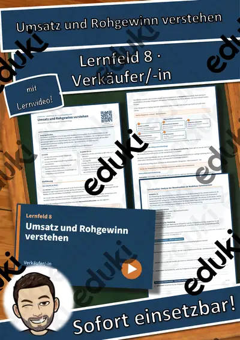
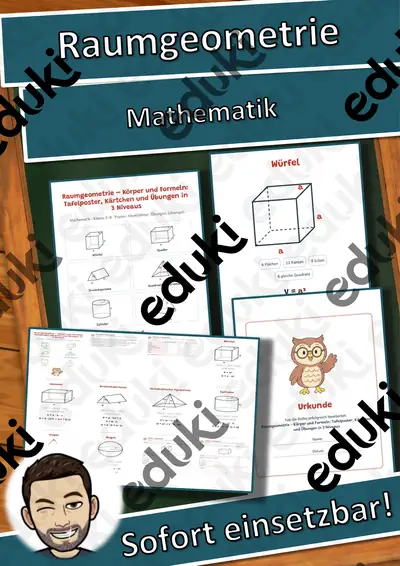
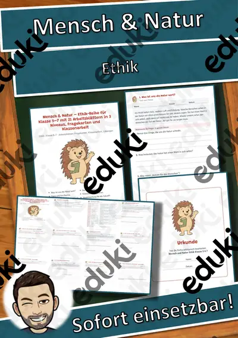

Lernfeld 8 Verkäufer/-in: Umsatz und Rohgewinn verstehen – Einführung, Übungen, Lösungen + Lernvideo

Domino: Piraten – Bild-Wort-Spiele – Klasse 1–4

Winterzeit-Spiele: Winter-Domino: Die Bild-Wort-Kette – Klasse 1–4

Raumgeometrie – Körper und Formeln: Tafelposter, Kärtchen und Übungen in 3 Niveaus

Mensch & Natur – Ethik-Reihe Klasse 5–7: 21 Arbeitsblätter in 3 Niveaus, Fragekarten, Klassenarbeit

Wortgitter-Suchsel: Im Restaurant – Wortgitter – Klasse 1–4

Sprechanlässe: Herbst – Sprechanlässe – Klasse 1–4

Wortspiele: Sag es nicht! Hobbys – Klasse 2–4

Bewegtes Lesen: Lesen mit Laufen, Würfeln und Rätseln

Schreibroute Herbst: Laufdiktat und Satzbau in drei Stufen

Wortgitter-Suchsel: Kochen und Backen – Wortgitter – Klasse 1–4

Klammerkarten: Ritter und Burg – Klammerkarten – Klasse 1–4

Wort-Bild-Karten: Im Restaurant – Wort-Bild-Karten – Klasse 1–4

Sprechanlässe: Am Meer – Sprechanlässe – Klasse 1–4

Memory: Bauernhof – Bild-Wort-Spiele – Klasse 1–4

Ich habe, wer hat? Kleidung – Lese-Schleifen – Klasse 1–4
LF 6 Elektroniker/-in: Auswahl und sicherer Einsatz von Messmitteln – Übungen, Lösungen + Lernvideo

Wortgitter-Suchsel: Obst und Gemüse – Wortgitter – Klasse 1–4

Himmel und Hölle: Piraten – Himmel und Hölle – Klasse 1–4

Wort-Bild-Karten: Kochen und Backen – Wort-Bild-Karten – Klasse 1–4

Lesen, Malen und Kleben: Körper und Sinne – Lesen und Malen – Klasse 1–4

Sprechanlässe: Piraten – Sprechanlässe – Klasse 1–4

Lernfeld 3 Elektroniker/-in: Steuerung gegenüber Regelung – Einführung, Übungen, Lösungen + Lernvideo

Domino: Bauernhof – Bild-Wort-Spiele – Klasse 1–4

Ich habe, wer hat? Im Restaurant – Lese-Schleifen – Klasse 1–4

Ich habe, wer hat? Kochen und Backen – Lese-Schleifen – Klasse 1–4

Wortspiele: Sag es nicht! Frühling – Klasse 2–4

Rechenheft Zahlenraum 1000: Hunderter, Zehner, Einer

LF 11 Kaufleute im Einzelhandel: Deckungsbeitrag und Mischkalkulation – Übungen, Lösungen + Lernvideo

Domino-Werkstatt: Domino Einmaleins mit Darstellungen – kostenlos, Klasse 2–4

Wortgitter-Suchsel: Im Garten – Wortgitter – Klasse 1–4

Klammerkarten: Piraten – Klammerkarten – Klasse 1–4

Wort-Bild-Karten: Obst und Gemüse – Wort-Bild-Karten – Klasse 1–4

Lesen, Malen und Kleben: Märchen – Lesen und Malen – Klasse 1–4

LF 7 Kaufleute im Einzelhandel: Lagersteuerung: Bestände und Umschlag berechnen – Übungen, Lösungen + Lernvideo

LF 2 Kaufleute im Einzelhandel: Umgang mit Kundeneinwänden und Alternativen – Übungen, Lösungen + Lernvideo

Rechenheft Zahlenraum 100: Üben, Spielen, Kontrollieren

Rechenheft Zahlenraum 20: Übungsheft mit Selbstkontrolle

LF 1 Fachinformatiker/-in: Aufbauorganisation und Rechtsformen in der IT – Übungen, Lösungen + Lernvideo

Domino-Werkstatt: Zahlen-Domino bis 100 – kostenlos, Klasse 1–2

Wortgitter-Suchsel: Haustiere – Wortgitter – Klasse 1–4

Himmel und Hölle: Am Meer – Himmel und Hölle – Klasse 1–4

LF 2 Zahnmedizinische Fachangestellte: Anamnese und Befundaufnahme – Übungen, Lösungen + Lernvideo

Wort-Bild-Karten: Berufe – Wort-Bild-Karten – Klasse 1–4

Lesen, Malen und Kleben: Zirkus – Lesen und Malen – Klasse 1–4

LF 8 Verkäufer/-in: Buchung von Geschäftsfällen im Einzelhandel – Übungen, Lösungen + Lernvideo

Sprechanlässe: Körper und Sinne – Sprechanlässe – Klasse 1–4

Memory: Zirkus – Bild-Wort-Spiele – Klasse 1–4
Keine Materialien gefunden – versuch einen anderen Suchbegriff oder Filter.